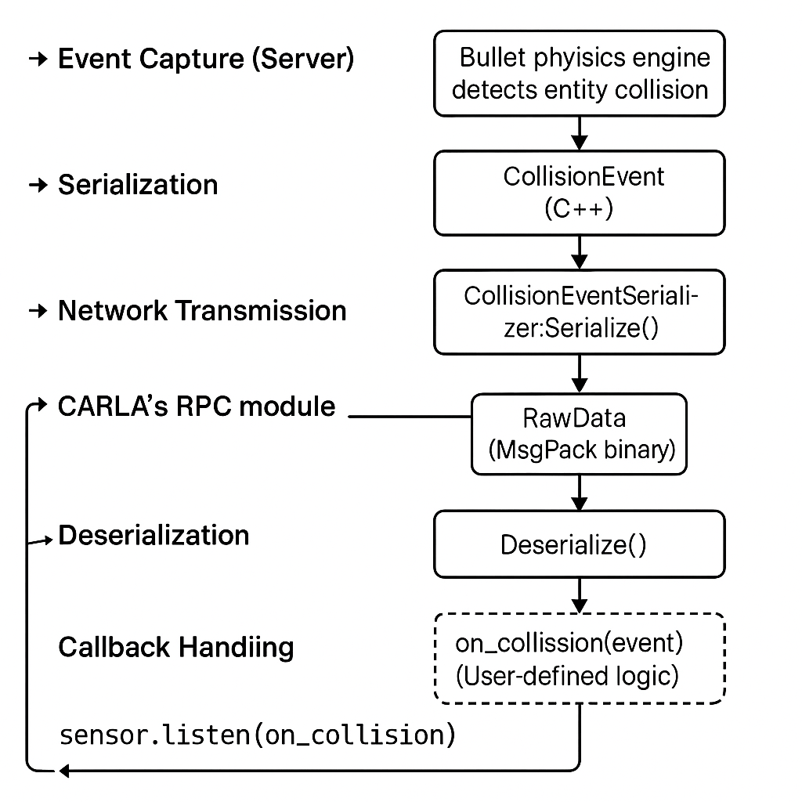

第一章：CARLA 碰撞事件传感器系统（sensor.other.collision）
1 模块概览
本章详细讲解 CARLA 模拟器中的一类简单传感器：sensor.other.collision，即碰撞事件传感器。该传感器不输出连续的数据流信息，而是在检测到实体碰撞时以事件形式即时触发。其设计初衷是为用户提供车辆与环境中其他对象之间物理交互的监控能力。
在自动驾驶仿真、强化学习安全评估或碰撞规避算法验证中，sensor.other.collision 提供了关键的反馈信号。通过对其数据结构、序列化机制与客户端回调触发流程的深入解析，可全面理解该传感器在 CARLA 感知系统中的运行机制及其工程实现。
2 传感器注册与调用原理
CARLA 所有传感器，包括 sensor.other.collision，均基于统一的 Actor 注册与绑定框架。其创建与工作流程可分为以下几个核心阶段：
- 蓝图注册阶段：CARLA 所有传感器类型在 Unreal Engine 的蓝图系统中定义，供客户端调用。
- Actor 创建阶段：Python 客户端通过
world.spawn_actor()创建"sensor.other.collision"实例。 - 传感器通道建立：Actor 自动绑定底层的
SensorData数据类型，用户通过.listen()注册事件处理函数。 - 事件触发与传输机制：
- 服务端生成
CollisionEvent事件（Bullet 引擎） - 使用
CollisionEventSerializer编码为RawData - 通过 RPC 网络发送
- 客户端使用
Deserialize()解码为SensorData - 注入回调函数中进行处理  该流程构成事件捕捉 → 数据序列化 → 网络传输 → 解码还原 → 客户端处理的完整通路。
3 数据结构：CollisionEvent
定义文件：carla/sensor/data/CollisionEvent.h
struct CollisionEvent {
rpc::Actor self_actor;
rpc::Actor other_actor;
geom::Vector3D normal_impulse;
};
self_actor：传感器附着实体（如车辆）other_actor：碰撞对象（如障碍物、NPC）normal_impulse：冲击力矢量，反映碰撞强度与方向
4 序列化器分析：CollisionEventSerializer
定义文件：
CollisionEventSerializer.h
CollisionEventSerializer.cpp
struct Data {
rpc::Actor self_actor;
rpc::Actor other_actor;
geom::Vector3D normal_impulse;
MSGPACK_DEFINE_ARRAY(self_actor, other_actor, normal_impulse)
};
template <typename SensorT>
static Buffer Serialize(
const SensorT &,
rpc::Actor self_actor,
rpc::Actor other_actor,
geom::Vector3D normal_impulse) {
return MsgPack::Pack(Data{self_actor, other_actor, normal_impulse});
}
static SharedPtr<SensorData> Deserialize(RawData &&data) {
return SharedPtr<SensorData>(new data::CollisionEvent(std::move(data)));
}
5 RawData 与 SensorData 概述
数据结构定义：
RawData.h
SensorData.h
class RawData {
public:
size_t GetFrame() const;
double GetTimestamp() const;
const rpc::Transform &GetSensorTransform() const;
const uint8_t *begin() const;
size_t size() const;
};
class SensorData : public EnableSharedFromThis<SensorData>, private NonCopyable {
protected:
SensorData(size_t frame, double timestamp, const rpc::Transform &sensor_transform);
};
6 Python API 使用示例
参考文件：collision_sensor.py
def on_collision(event):
actor = event.other_actor
impulse = event.normal_impulse
print(f"发生碰撞！对象类型：{actor.type_id}，冲击向量：{impulse}")
blueprint_library = world.get_blueprint_library()
bp = blueprint_library.find('sensor.other.collision')
transform = carla.Transform(carla.Location(x=0, y=0, z=2.0))
sensor = world.spawn_actor(bp, transform, attach_to=vehicle)
sensor.listen(on_collision)
7 小结与拓展
sensor.other.collision是轻量、事件驱动的传感器- 使用
MsgPack + RawData组合，编码效率高 - 常用于：碰撞检测、事故分析、惩罚信号生成
可拓展方向：
- 增加字段（如速度向量、碰撞位置）
- 结合图像、GNSS 数据实现回溯系统
- 与强化学习结合生成动态规避策略
第二章：CARLA 空传感器系统（sensor.other.noop）
1 模块概览
本章介绍 CARLA 模拟器中最为简化的一类传感器：sensor.other.noop，即“无操作传感器”（No-Operation Sensor）。顾名思义，该传感器不会向客户端发送任何数据，其存在的意义更多是作为客户端挂载传感器的占位符、功能测试器或新传感器开发的最小模板。
sensor.other.noop 适用于以下场景：
- 构建新型传感器时的起始模板；
- 用于网络与回调机制调试，无需实际数据；
- 占位传感器（需要绑定但暂时不产出数据）；
- 模拟传感器失败或无响应场景下的系统行为。
其核心特征是：不参与数据流的任何阶段，服务端不会推送数据，客户端接收到数据则立即报错。
2 传感器注册与调用原理
sensor.other.noop 遵循 CARLA 所有传感器统一的注册、挂载、通信框架，其调用流程包括以下几个阶段：
- 蓝图注册阶段：该传感器在 Unreal Engine 蓝图系统中以
"sensor.other.noop"注册，蓝图库中包含其类型定义。 - Actor 创建阶段：客户端通过
world.spawn_actor()创建该传感器实例，传入"sensor.other.noop"字符串作为蓝图 ID，实例可附着至车辆或动态对象。 - 传感器监听绑定：
- 可通过
.listen()注册 Python 回调函数； - 但由于此传感器不会生成任何事件，回调函数永远不会被实际调用；
- 若数据进入系统，将由序列化器直接拒绝并抛出异常。
3 序列化器分析：NoopSerializer
该序列化器专为“客户端不接收数据”的传感器设计，核心逻辑是禁止任何数据反序列化。
3.1 接口定义
/// Dummy serializer that blocks all the data.
class NoopSerializer {
public:
[[noreturn]] static SharedPtr<SensorData> Deserialize(RawData &&data);
};
说明：
[[noreturn]]是 C++11 标准修饰符，表示该函数永不返回；- 调用该函数将抛出异常，标志该传感器设计为“不可反序列化”。
3.2 函数实现
SharedPtr<SensorData> NoopSerializer::Deserialize(RawData &&) {
throw_exception(std::runtime_error("NoopSerializer: Invalid data received."));
}
说明：
- 使用 CARLA 提供的
throw_exception工具函数； - 一旦客户端尝试处理此类型数据，即触发中断错误；
- 该机制确保
sensor.other.noop无法被误用。
4 数据结构与传输机制
该传感器不绑定任何结构化数据类型：
- 不包含自定义数据结构（如
NoopEvent）； - 不通过
RawData传输任何内容； - 无有效
SensorData派生类实例生成； - 虽然支持
.listen()注册机制，但永不触发。
因此，sensor.other.noop 是一种“存在但不发声”的传感器，仅用于挂载占位或调试目的。
5 Python API 使用示例
虽然该传感器不传输数据，仍可正常在 Python 中创建与注册监听。
# 定义回调函数（注意：不会被调用）
def on_noop_event(event):
print("此处不应出现任何输出")
# 获取蓝图库并查找蓝图
bp = world.get_blueprint_library().find('sensor.other.noop')
# 设置传感器相对位置
transform = carla.Transform(carla.Location(x=0, y=0, z=2.0))
# 创建传感器并附着至车辆
noop_sensor = world.spawn_actor(bp, transform, attach_to=vehicle)
# 注册监听函数（将不会触发）
noop_sensor.listen(on_noop_event)
可选调试建议：
- 可用日志验证传感器挂载成功；
- 可调用
.destroy()观察销毁逻辑； - 可组合多个传感器观察
.listen()机制行为。
6 小结与拓展
sensor.other.noop是 CARLA 中结构最简、用途最特殊的一类传感器；- 其核心设计目的是：禁止数据流通，仅做占位和调试；
- 非常适合作为自定义传感器的开发模板或序列化链测试工具。
拓展建议：
- 作为新事件传感器的起点模板；
- 用于测试
.listen()和.destroy()回调流程； - 模拟传感器故障、异常或丢包处理机制；
- 可组合图像、IMU 等实际传感器测试是否发生调用竞争或系统冲突。